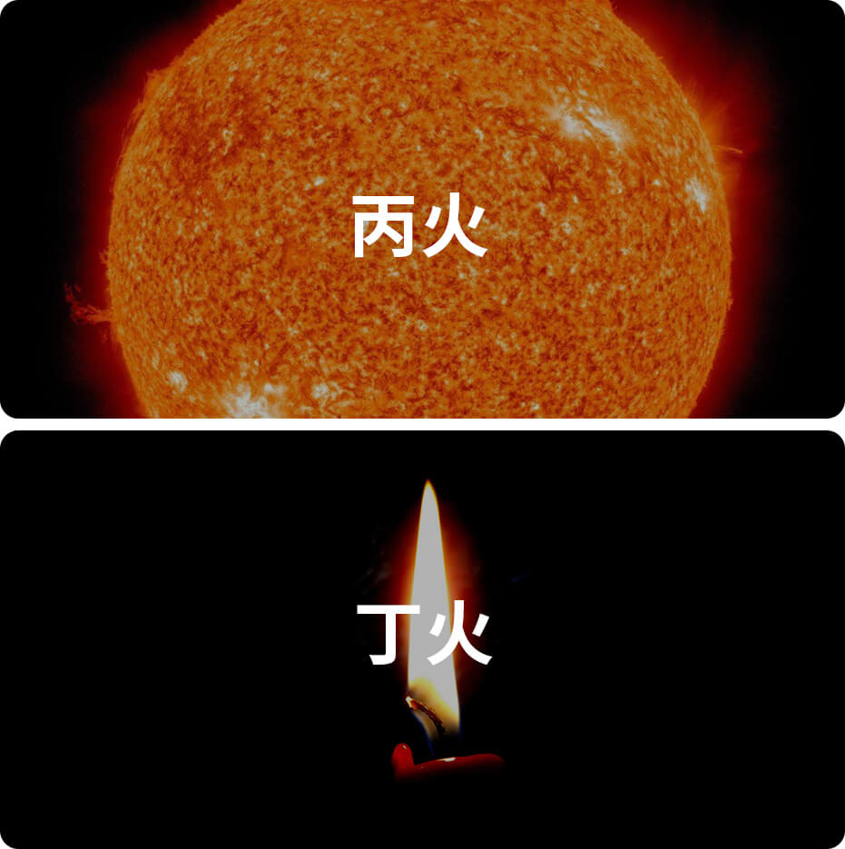

丁火在十天干里排行第四位，属阴火，主礼。
自然属性：星星之火，可以燎原

丁火性格
礼貌、热情、心思细腻
关键词：礼貌
丁火象征着蜡烛、灯火。火的使用，代表着人类的文明的到来。所以丁火也是文明和礼仪的代名词。丁火的人，总是彬彬有礼，相处起来让人如沐春风。
关键词：热情
丁火在燃烧自己的过程中，向外界散发温度，照暖了无数个黑夜以及寒冷的冬日。所以丁火的人，自带热情的气质，哪怕初认识，也可以让你感受不到距离感。
关键词：心思细腻
丁火是柔弱的，容易被风吹而摇曳，甚至熄灭。所以丁火是细腻、敏感、脆弱的。如果你有一个丁火的朋友，要注意对悉心呵护，照顾好他们的玻璃心了。
丁火日主人的正面性格：温和有礼而热情，情感丰富；目光长远，行事谨慎，能奉献牺牲自己。
丁火日主人的负面性格：不善拒绝别人，遇事易犹豫不决，易猜忌怀疑，易聪明反被聪明误。
诗诀
丁火生人心性急，心中有话当面提。
为人在先多快乐，暴打不平属第一。
（性格气质需要综合命局的五行、十神、用神等特质综合评判，此处仅提供丁火日主维度的特质参考，需知丁火越旺，则丁火特性越明显。）
丁火名人：
马云、范冰冰
丁火类象
蜡烛、思想、传播、祥云、月光、厨房、妇女、教师、血液、心脏、美容、玫瑰、飞虫。
《滴天髓》论丁火
丁火柔中，内性昭融，抱乙而孝，合壬而忠，旺而不烈，衰而不穷，如有嫡母，可秋可冬。
《渊海子平》论丁火
丁火其形一烛灯，太阳相见夺光明。得时能化千斤铁，失令难熔一寸金。
虽少乾柴尤可引，纵多湿木不能生。其间衰旺当分晓，旺比一炉衰一檠。